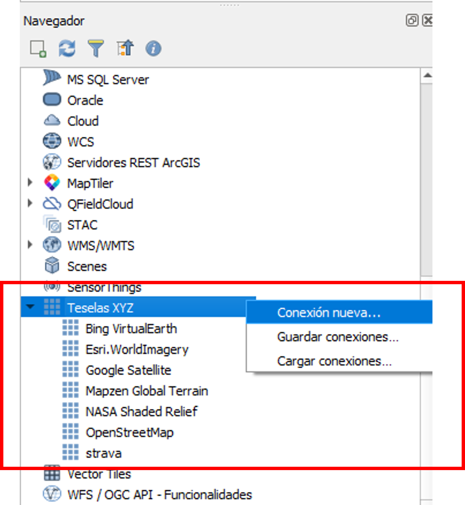
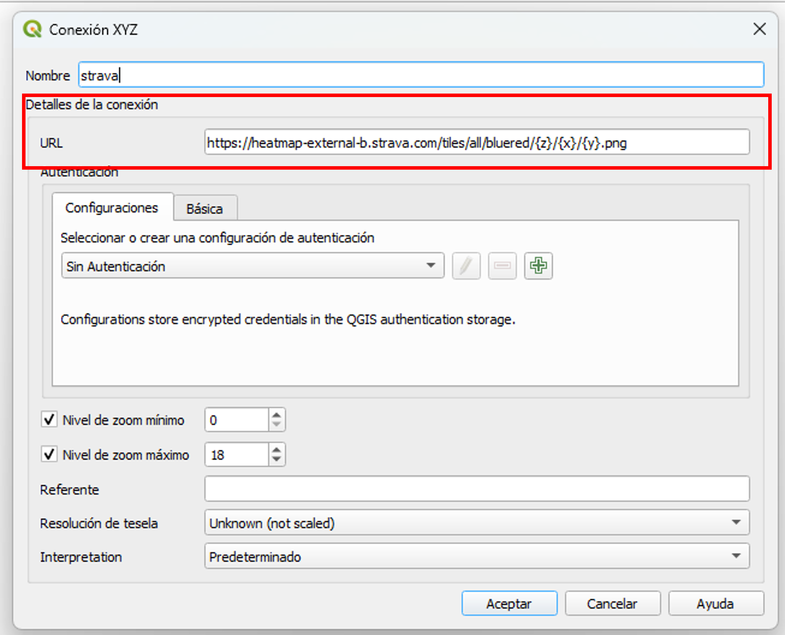
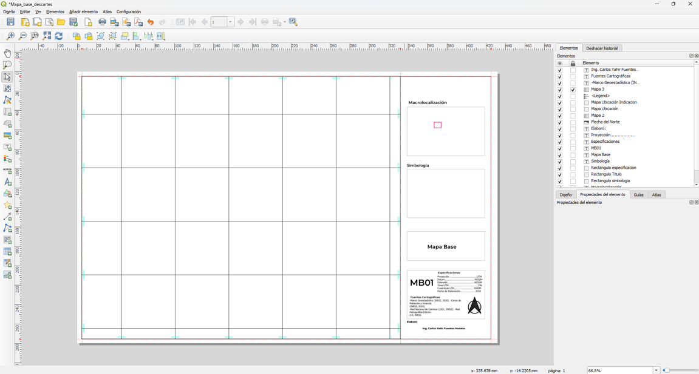

1. Conexión a Servicios Web (XYZ Tiles y WMS)
Un SIG moderno no vive solo de archivos locales. Aprendemos a conectar mapas base y capas oficiales del gobierno mediante estándares internacionales.
XYZ Tiles: Mapas de Referencia
Permiten traer imágenes de Google Maps, OpenStreetMap o Esri directamente al lienzo de QGIS. Son fundamentales para el contexto visual del proyecto.

WMS: Datos Oficiales (IDE)
Las Infraestructuras de Datos Espaciales (IDE) gubernamentales ofrecen servicios WMS (Web Map Service). Esto nos permite consultar cartografía oficial (catastro, riesgos, hidrología) sin necesidad de descargar archivos pesados.

XYZ Tiles vs. QuickMapServices: ¿Cuál usar?
Aunque ambos sirven para poner un mapa base debajo de nuestro proyecto (como pedir una pizza), la forma en que "llegan" a tu mapa es muy distinta. Aquí la comparativa técnica:
XYZ Tiles (La receta casera)
¿Qué es? Una conexión directa mediante una URL estandarizada. Es el método nativo de QGIS.
- Control: Total. Tú decides qué servidor usar.
- Estabilidad: No depende de plugins externos.
- Dificultad: Debes buscar la URL exacta del servidor y configurarla manualmente.
Uso ideal: Para conexiones privadas o servidores específicos de una dependencia o empresa.
QuickMapServices (El menú a domicilio)
¿Qué es? Un plugin (complemento) que actúa como un catálogo automatizado agrupando miles de servidores de la comunidad.
- Control: Limitado al catálogo de la comunidad.
- Estabilidad: Depende de que el creador mantenga el plugin actualizado.
- Dificultad: Muy baja. Solo abres el menú, haces clic y listo.
Tip de Oro: Al instalarlo, recuerda ir a Settings > More services > Get contributed pack para habilitar los mapas de Google.

2. Consulta y Diseño del Layout
Antes de imprimir, usamos la herramienta Identificar para verificar los atributos finales y luego pasamos al Diseñador de Impresión.
Elementos Esenciales del Plano Profesional
Para que un plano sea aceptado en una dependencia oficial, debe contener los siguientes elementos normativos:
- Grilla de Coordenadas: Cruces o líneas que indican la posición exacta (usando EPSG:32615 para nuestra zona).
- Escala Gráfica y Numérica: Vital para realizar mediciones sobre el papel.
- Flecha de Norte: Orientación geográfica del levantamiento.
- Leyenda: El diccionario visual que explica cada capa del plano.

3. Exportación Final
El paso final es la exportación. Para ingeniería civil, el estándar es el formato PDF para planos digitales y TIFF de alta resolución (300 DPI) para impresión física.
Recuerda revisar siempre la resolución de salida. Un plano de ingeniería con baja resolución puede ocultar detalles críticos de las curvas de nivel o la simbología técnica.
¡Has completado el curso de QGIS para Ingeniería Civil!
Acceder a los Datos del Proyecto Final